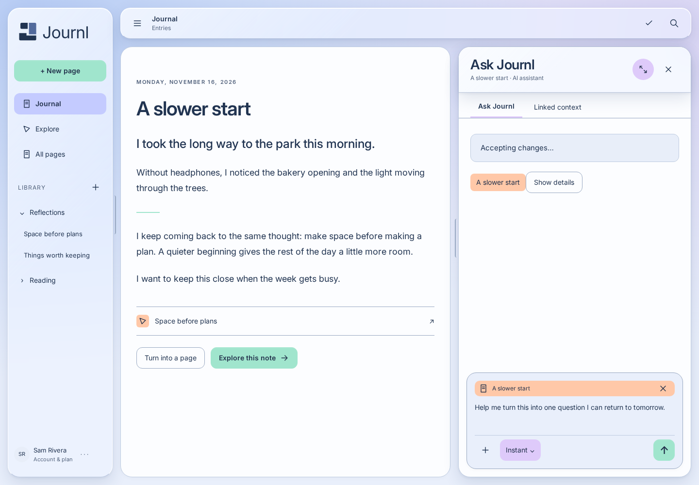
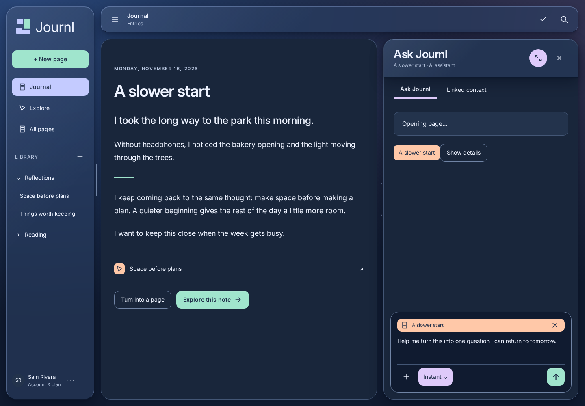
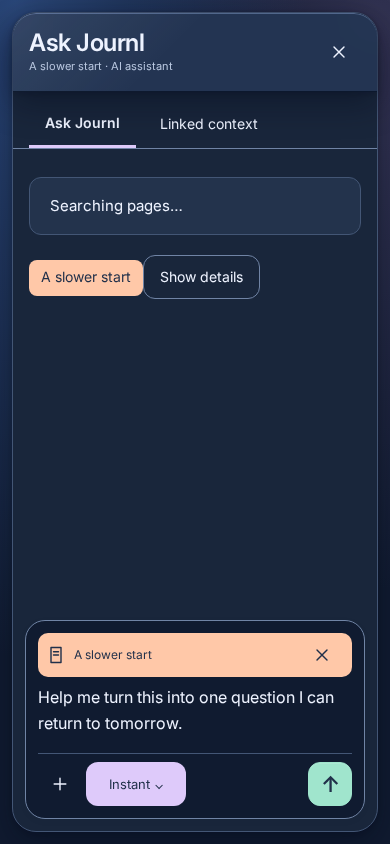
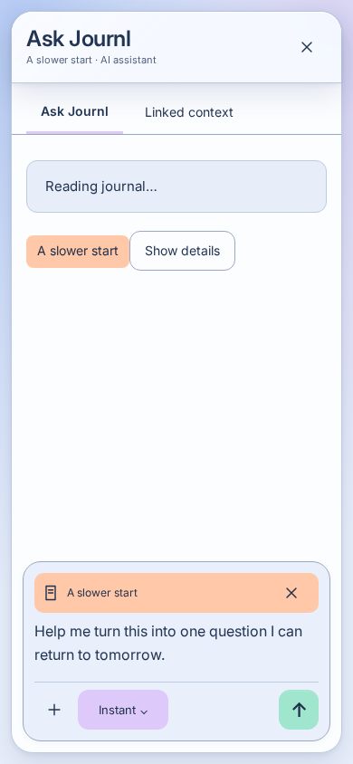

Chat
Approved application · approved logoEvery image below is an actual canonical PNG. Open an image for its full resolution. These are authored design scenes, not current-app browser captures.
Accepting changes
tool-applyChangesActions and implementation pointers
+ New page · Journal · Explore · All pages · ⌄ · Reflections · › · Reading · Turn into a page · Explore this note · Ask Journl · Linked context · Show details · Instant ⌄ · ↑ · Entries · Timeline · Nov 16 · History · Close · Instant · Thinking
apps/web/src/components/assistant-ui/thread-components.tsx


SHA256 7f9e565be2a2a189f20937be0625abd5c9b7224a2a516b6156cf58906e510bbd

SHA256 81024caf555fcb002708335b1a7342c5ff934fd7e4641daed5cde8c589bc546e

SHA256 45c44b114d6aadcca41670b98621edce512f3e109435424b524189c21b49ce72

SHA256 a1385a209227b6ab1907405604c9618423bb4fc6dad986e2ae6fe6d26a95616a
Creating page
tool-createPageActions and implementation pointers
+ New page · Journal · Explore · All pages · ⌄ · Reflections · › · Reading · Turn into a page · Explore this note · Ask Journl · Linked context · Show details · Instant ⌄ · ↑ · Entries · Timeline · Nov 16 · History · Close · Instant · Thinking
apps/web/src/components/assistant-ui/thread-components.tsx

SHA256 c9d873ae9c706a09bfaf449359688c8b68bab474f593dd89e70d226422b5cbe2

SHA256 51cfd22ad4e9dc4da1d9016cd8fd569c6a5d3f0a291b0e43d5da9a5459b8ab40

SHA256 162cc967990547b859de0434b81f90b03fe64439246a690eaf87273500425a45

SHA256 4e3ffeaf6e7a0001e6f94d1f931b145cd1d3243abea3931e938a14c6f13e3688
Opening journal
tool-navigateJournalEntryActions and implementation pointers
+ New page · Journal · Explore · All pages · ⌄ · Reflections · › · Reading · Turn into a page · Explore this note · Ask Journl · Linked context · Show details · Instant ⌄ · ↑ · Entries · Timeline · Nov 16 · History · Close · Instant · Thinking
apps/web/src/components/assistant-ui/thread-components.tsx

SHA256 83b803b235bdea4ae68318e0eb8768519e032da29d47638f475ede17a7d6a744

SHA256 67c869513b036ae4fcbb5b7e46bfccf56328dd784ee01946a8625110d1ebaab8

SHA256 e805bb46056de6328feac0ec8cb3c39eee50125b3167948c1ed9e2a16a852581

SHA256 f5045d4ec6dd95dac40bb9c68e0ef7e2e24064a904402b92e796ad86074edca2
Opening page
tool-navigatePageActions and implementation pointers
+ New page · Journal · Explore · All pages · ⌄ · Reflections · › · Reading · Turn into a page · Explore this note · Ask Journl · Linked context · Show details · Instant ⌄ · ↑ · Entries · Timeline · Nov 16 · History · Close · Instant · Thinking
apps/web/src/components/assistant-ui/thread-components.tsx

SHA256 b91fe851b5d8bc41e0b88893f0d8a3813699cdee5f98c7d9ff63774285e2a875

SHA256 8508acdfc5348eaef64b069e5174293e6c59103380815c08d97ae30d655095ca


SHA256 af52af96c380139f8007f961bb8ac813efe74e3b9933bee26d931956c2172981

SHA256 de4d3a4c9d7b52350b7890cca8e52a5a149d4111df483ff4ec8a62bb2777f6cf
Exploring note references
tool-queryNoteReferencesActions and implementation pointers
+ New page · Journal · Explore · All pages · ⌄ · Reflections · › · Reading · Turn into a page · Explore this note · Ask Journl · Linked context · Show details · Instant ⌄ · ↑ · Entries · Timeline · Nov 16 · History · Close · Instant · Thinking
apps/web/src/components/assistant-ui/thread-components.tsx

SHA256 92869b67f193d97ab5428957377bb33a9f8dec34af021c939f8c816425324b4c

SHA256 103bf66792d380fac6fa46c9a15bb469e81951c3223fad3ac723c2c5a4999e2e

SHA256 d60a8eea419bb18e6f735a8e9d706a01c98a6651cb966d443135ba22d690f611

SHA256 470c4342fcc63e39339815c704f5f8c8c3dd9c3f36175e00c7b32308f7090265
Rejecting changes
tool-rejectChangesActions and implementation pointers
+ New page · Journal · Explore · All pages · ⌄ · Reflections · › · Reading · Turn into a page · Explore this note · Ask Journl · Linked context · Show details · Instant ⌄ · ↑ · Entries · Timeline · Nov 16 · History · Close · Instant · Thinking
apps/web/src/components/assistant-ui/thread-components.tsx

SHA256 8b3627b48534933978189db58828a9887289ed8018ea52f234b1d263dd8d3b16

SHA256 ec9ff3b9c73b411db763bda63bbb85a60bdda96ddd5a32379c828af624a9a5eb

SHA256 121b4161aab788d256b8e655842035ade0e38321bff8d919f49aa79a405cbd15

SHA256 57f3cdf729a3d736d128536bbff7e8525b6f5323b30c6d7adcf24615ac7ac6a4
Searching entries
tool-semanticJournalSearchActions and implementation pointers
+ New page · Journal · Explore · All pages · ⌄ · Reflections · › · Reading · Turn into a page · Explore this note · Ask Journl · Linked context · Show details · Instant ⌄ · ↑ · Entries · Timeline · Nov 16 · History · Close · Instant · Thinking
apps/web/src/components/assistant-ui/thread-components.tsx

SHA256 b5a4ad8063cf0d6bd77fe4a6a8b3c5588f45cecab72cb40ef391d3f9f9ab435e

SHA256 cc54d441e361d18f3b46ab66dd2cf542a13c29973f5422b70b8137025947162c

SHA256 5254bf6b262bf745773848f515de19cd07b740d70201c7b46f468e72fb39f810

SHA256 646a2522704d3bd0f5fde3ee083bca85dc16403d30ade57308fe57bcd070dd0c
Searching pages
tool-semanticPageSearchActions and implementation pointers
+ New page · Journal · Explore · All pages · ⌄ · Reflections · › · Reading · Turn into a page · Explore this note · Ask Journl · Linked context · Show details · Instant ⌄ · ↑ · Entries · Timeline · Nov 16 · History · Close · Instant · Thinking
apps/web/src/components/assistant-ui/thread-components.tsx

SHA256 b34c44a5af254826a0aeea8dfe7c5638418045fc7f92fd692bfd9c7ef9ac65ab

SHA256 0edd67b4168f23f670ab631cde029949758421d82024a97ea1a95c6c0079db86


SHA256 34612301ef508ca028ea6dddcd5479c04ddb45d4c0e3990311450954b10cbb79

SHA256 46ffa847e5ce4685f2e71aff4c8289119e912592597b44243742e9377c05f8ee
Reading journal
tool-temporalJournalSearchActions and implementation pointers
+ New page · Journal · Explore · All pages · ⌄ · Reflections · › · Reading · Turn into a page · Explore this note · Ask Journl · Linked context · Show details · Instant ⌄ · ↑ · Entries · Timeline · Nov 16 · History · Close · Instant · Thinking
apps/web/src/components/assistant-ui/thread-components.tsx

SHA256 57cc8ed858245be13018b72677eba781bf9862b3a213d0252be497e7013eaccc

SHA256 7c58d9e172c699986407a600fd3097a0ba9b3dad728d5ed000ea8c8baebd9a4d

SHA256 25fd022ea184a25e744b11d7c5d5fecd8e962003ba9a0304a232ebc9fb2f68b3


SHA256 61dd345cbff795bd25b8a5bd6feeb6ab48632314bb0b634f26b3ef9fc982e53c
Searching web
tool-webSearchActions and implementation pointers
+ New page · Journal · Explore · All pages · ⌄ · Reflections · › · Reading · Turn into a page · Explore this note · Ask Journl · Linked context · Show details · Instant ⌄ · ↑ · Entries · Timeline · Nov 16 · History · Close · Instant · Thinking
apps/web/src/components/assistant-ui/thread-components.tsx

SHA256 3f060f5c953eea53bc3798f949c152bebe0707f3f0ccbbf6fe895217e72b1993

SHA256 d299f3a2c661737f73d811ba8370c57098a398d775a0e2dd409b7bbe006b7f7f

SHA256 b68d01903783f91f3304041abec172a11dbe9eeaa8459b9f972b78c94e9b3c00

SHA256 406438c546c64cce70d3d68fd21471c149da7fd9831cc0bf8b5d5211e7125ddd